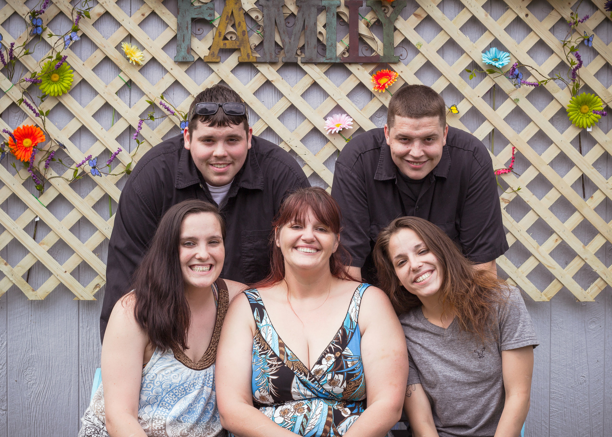
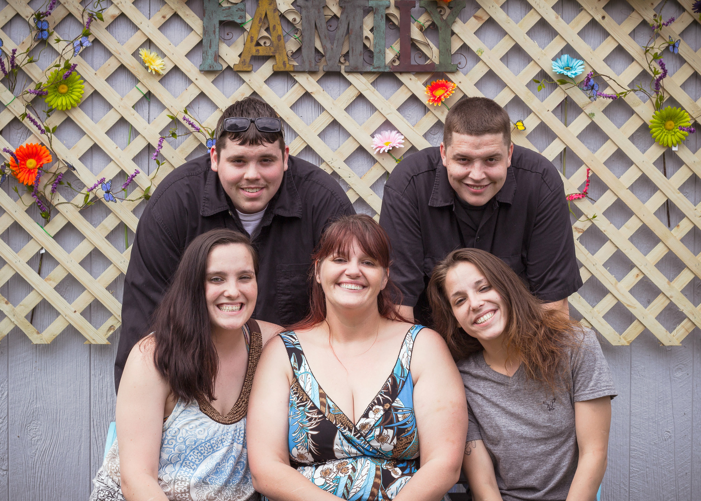

Media
Welcome to my media page! On this page you will see pictures of my family pets and a few extras. Enjoy! let me know if you have any questions or feedback on my contact page.
Me and my husband and Kids
.jpg) 

Let me introduce the most loving and supporting person I have ever known. Kenny and I have been living as married for 3 years. He is a truly amazing person. and although we didn't have kids together he treats my adult kids, like his own.
The Second photo is of My children top left Damian on right Dillan left to right in front Samantha Me Sabrina the girls are twins.
Pets

Playing with lights
The photos above are from the first time I played around with light and Arduino boards. I was able to create a variety of colors and patterns using code. It was a fun and rewarding experience!
Graduation Photo video
This is a video I created for my Daughter's Graduation from Community Care College. It was my way of telling her how proud I am of her and how much I love her. It was the only present I could give her at the time, but it was the most meaningful one.
Inspirational video of Simon Sinek Speaking
This is a video of Simon Sinek speaking about motivation and how to inspire others. Simon is one of my favorite public speakers and authors. I encourage you check out his Ted Talks on YouTube. There is so much Truth in what he speaks about. I find him to be very motivational and inspiring. I hope you enjoy it as much as I did!
Quotes that inspire me
The quotes below are some of my favorites. They inspire me to be the best version of myself and to always strive for greatness. I hope they inspire you as well!